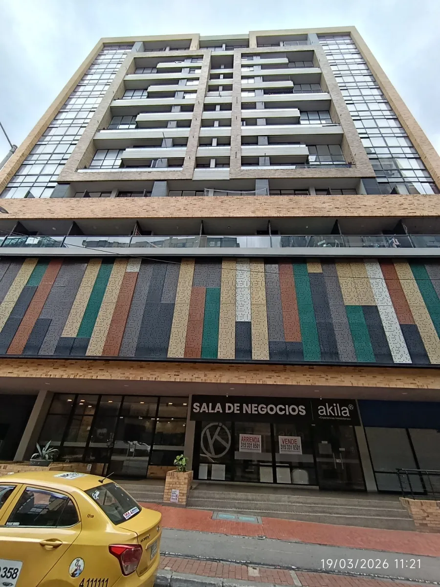

Avalúos de Casas y Apartamentos en el Meta con Validez Bancaria
Dictamen pericial oficial para crédito hipotecario, compraventa o sucesiones. Visita técnica en 24 a 48h, método comparativo de mercado y plena aceptación ante Bancolombia, Davivienda, Banco Agrario, FNA y Notarías.
Tarifas base aplicadas en casco urbano de Villavicencio. Para otros municipios resulta necesario cotizar el desplazamiento.

Barzal, Buque, Trapiche, Caudal & Restrepo
¿Para qué trámite requieres el avalúo de tu vivienda?
El informe pericial se expide según las pautas técnicas exigidas por cada entidad receptora:
Crédito Hipotecario & Leasing
Exigido por Bancolombia, Davivienda, FNA, Banco de Bogotá y Banco Agrario para autorizar el desembolso sobre el valor comercial certificado.
Compraventa entre Particulares
Conoce el precio exacto por metro cuadrado de la zona. Si compras, no pagues sobreprecio; si vendes, no remates tu patrimonio por falta de criterio técnico.
Sucesiones y Partición Conyugal
Determinación imparcial del valor para adjudicación en Notaría o Juzgado de Familia en liquidación de herencias o divorcios, evitando disputas entre partes.
Procesos Judiciales y Notarías
Prueba pericial técnica bajo el Artículo 226 del CGP para procesos divisorios, dación en pago, remates judiciales o fijación de fianza ante juzgados.
¿Qué incluye el Dictamen Pericial de Vivienda?
Entregamos un informe pericial completo foliado bajo la Resolución IGAC 620 de 2008 y normas internacionales NIIF / IFRS 13:
Estudio Comparativo de Mercado Homogeneizado
Muestreo riguroso de ofertas reales en el mismo sector y estrato, ajustadas por negociación, fondo/frente, piso y área.
Estado de Conservación Físico (Ross-Heidecke)
Calificación técnica de la depreciación por edad y estado de conservación de acabados, redes hidráulicas y eléctricas.
Revisión de Propiedad Horizontal (PH) y Garajes
Verificación de coeficientes de copropiedad, parqueaderos privados vs. comunales, depósitos y cuotas de administración.
Firma Colegiada RAA & QR de Verificación
Dictamen digital firmado con código QR institucional para validación instantánea por el analista de crédito del banco.
Aceptación bancaria sin retrasos
Sabemos que en un crédito hipotecario el tiempo es dinero. Entregamos el dictamen en 2 a 3 días hábiles en Villavicencio, foliado con las especificaciones exactas que exige el banco para no frenar la fecha de escrituración.
¿Cómo se realiza el avalúo de tu vivienda en 3 pasos?
Proceso rápido y transparente sin trámites burocráticos innecesarios:
Envías Tradición y Predial
Nos envías copia digital del Certificado de Tradición y el recibo del predial por WhatsApp. Confirmamos área y te enviamos la cotización formal de inmediato.
⚡ Cotización en menos de 1hVisita Técnica al Inmueble
El avaluador colegiado RAA inspecciona la casa o apartamento, toma medidas físicas, evalúa el estado de acabados y realiza el registro fotográfico pericial.
🏠 Visita en 24 a 48hEntrega del Dictamen Oficial
Recibes el dictamen digital foliado con firma RAA, código QR de autenticidad y plena validez bajo Ley 1673 de 2013, listo para radicar en el banco o notaría.
📅 Entrega en 2 a 3 días hábilesDocumentos requeridos para cotizar y agendar la visita
Tener estos documentos digitalizados en PDF o foto clara permite iniciar el trámite de inmediato:
Certificado de Tradición
Con vigencia menor a 30 días expedido por la Superintendencia SNR.
Copia de la Escritura
Copia simple de la escritura registrada donde constan los linderos y área privada.
Último Recibo Predial
Recibo del impuesto predial para confirmar la cédula catastral del inmueble.
Paz y Salvo / Coeficiente
Paz y salvo de administración y número de matrícula de garaje o depósito si aplica.
Caso de Éxito: Apartamento PH en Sector Buque, Villavicencio
Tasación comercial de 118 m² con parqueadero doble y depósito
El caso: Comprador requería dictamen pericial urgente para crédito hipotecario con Bancolombia sobre un apartamento usado en conjunto cerrado estrato 5. La promesa de compraventa fijaba un plazo límite de 8 días para radicación del avalúo.
El resultado: El perito RAA visitó el inmueble en 24 horas, homologó 6 ofertas activas en el sector Buque/Trapiche y entregó el dictamen foliado en 3 días hábiles. El banco autorizó el desembolso por $385.000.000 COP sin requerimientos adicionales.
Preguntas Frecuentes sobre Avalúos de Casas y Apartamentos
¿Este avalúo me sirve para solicitar un crédito hipotecario o leasing habitacional?
Sí. Nuestros dictámenes periciales son firmados por avaluadores colegiados inscritos en el Registro Abierto de Avaluadores (RAA) bajo la Ley 1673 de 2013 y normas NIIF / IVSC, siendo aceptados formalmente por comités de crédito de Bancolombia, Davivienda, Banco de Bogotá, Banco Agrario, BBVA, Banco Caja Social y el Fondo Nacional del Ahorro (FNA).
¿Cuánto cuesta el avalúo comercial de una casa o apartamento en Villavicencio?
La tarifa oficial para apartamentos y casas residenciales inicia desde $450.000 COP en el casco urbano de Villavicencio (entrega en 2 a 3 días hábiles). Para inmuebles de mayor metraje o estratos altos, los honorarios se liquidan de manera transparente según la tabla regulada por la Lonja. Para predios fuera de Villavicencio resulta necesario cotizar el desplazamiento.
¿Cuánto tiempo se demoran en visitar el inmueble y entregar el informe pericial?
La visita pericial en el inmueble se programa en un lapso de 24 a 48 horas tras recibir la documentación. El dictamen final foliado con firma RAA y código QR se entrega en un plazo ágil de 2 a 3 días hábiles en Villavicencio.
¿Qué revisa el perito durante la visita técnica a la casa o apartamento?
El perito avaluador verifica: 1) Estado físico de conservación de pisos, muros, carpintería e instalaciones mediante el método Ross-Heidecke, 2) Calidad de los acabados, 3) Distribución espacial y metraje real frente a la escritura, y 4) En apartamentos o casas en conjunto (PH), zonas comunes, garajes, depósitos y reglamento de propiedad horizontal.
¿El avalúo comercial influye en el valor del impuesto predial que pago?
No. El avalúo comercial es un informe privado que determina el valor de mercado para trámites bancarios, compraventas o juzgados. No se comparte automáticamente con la Secretaría de Hacienda ni con el IGAC, por lo que no altera el impuesto predial liquidado anualmente.
Servicios complementarios para propietarios e inversionistas
Avalúo de Fincas y Predios Rurales
Tasación con dron RTK y validez ante Banco Agrario para fincas ganaderas, agrícolas y campestres en el Meta.
Estudio de Títulos y Saneamiento
Revisión registral y notarial a 20 y 30 años antes de firmar promesa de compraventa o escrituras.
Tarifas Oficiales Reguladas
Consulta los honorarios exactos fijados según la Ley 1673 de 2013 para casas, apartamentos y locales comerciales.
Tasa tu casa o apartamento con plena validez bancaria
Agenda la visita pericial en 24 a 48h y recibe tu informe oficial foliado en 2 a 3 días hábiles en Villavicencio, aceptado por Bancolombia, Davivienda, FNA y notarías.